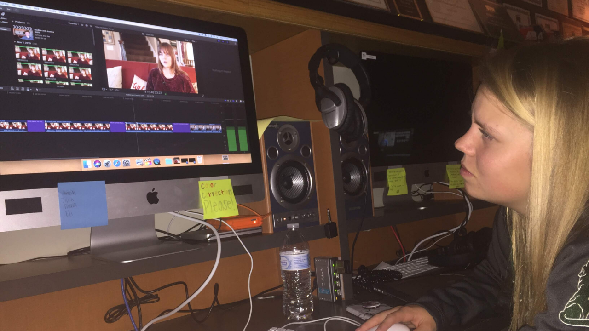
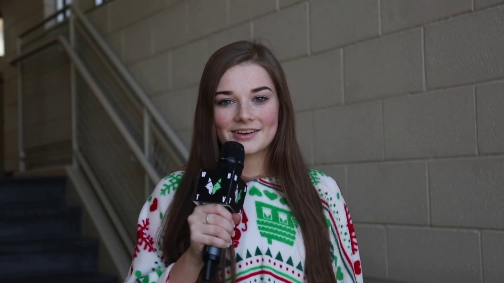
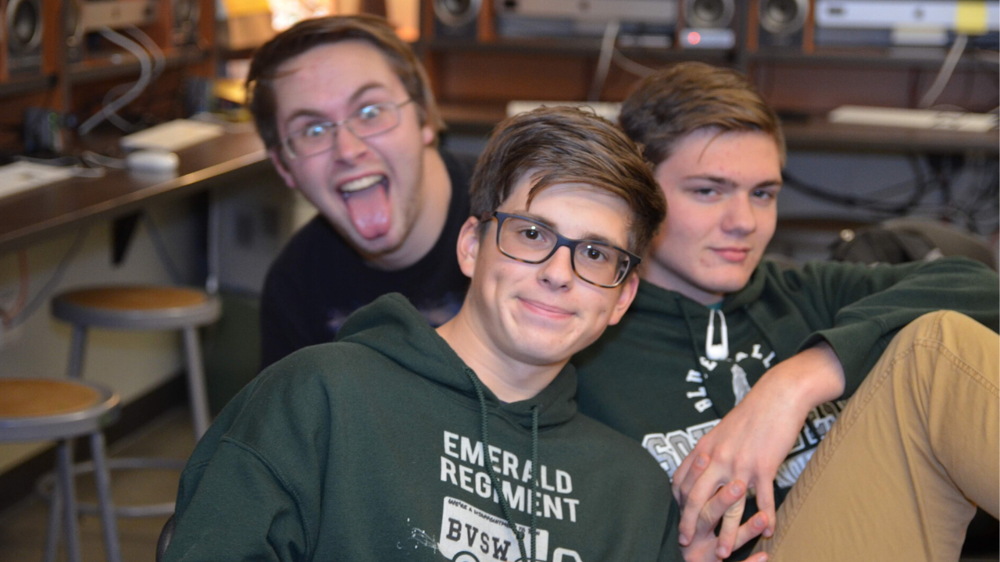

Who Are We
Learn about the people who produce the content that you watch.
WBTV 2020
Jessica Bell // Class of 2022
Jessica Bell has been with WolfByte TV since her sophmore year. The 2019-2020 school year was her first year in this prgram. She has worked on broadcastcast journalism packages, sports, marketing, and entertainment packages.
Shreya Bhatia // Class of 2023
 This is Shreya's first year with WolfByte TV.
This is Shreya's first year with WolfByte TV.
Hana Bowsher // Class of 2023
This is Hana's first year with WolfByte TV.
Katie Carest // Class of 2021
Katie Charest is a senior at Blue Valley Southwest. This is her 2nd year in Wolfbyte and her 3rd year in the broadcast program. Katie is the show producer this year for Wolfbyte TV. Katie's favorite thing about Wolfbyte is being able to showcase others and loves working with them and her partners to tell an amazing story. Outside of Wolfbyte Katie is on the Glitter Girls dance team as a captain and she is a part of two honors societies; National Honors Society, National French Honors Society. Katie has enjoyed her time in Wolfbyte and has loved being a part of such a special program.
Tyler Dorsch // Class of 2021
This is Tylers's third year with WolfByte TV.
Maddie Kelly // Class of 2022
Maddie Kelly is a senior at Blue Valley Southwest. This is her 2nd year in WolfByte. Maddie is one of the executive producers of WolfByte TV. Maddie’s favorite things about WolfByte are the people and telling stories. Outside of WolfByte, Maddie is apart of WolfPack Crew, Hoops For Hope leadership, and National Honors Society.
Luke LeFevre // Class of 2022
This is Luke's first year with WolfByte TV.
Kelli Marshall // Class of 2022
This is Kelli's first year with WolfByte TV.
Gabe McGee // Class of 2022
Gabe McGee is a Junior at Blue Valley Southwest. This is his 2nd year in WolfByte and 3rd year in the broadcast program. Gabe enjoys the artistic process and creation that goes into crafting, and editing videos. Outside of Wolfbyte Gabe is involved in Cross Country and Track where he enjoys distance running. He has goals to run in college as a student athlete after high school.
Katie Pittman // Class of 2023
Katie Pittman is a sophomore at Blue Valley Southwest. This is her second semester in WolfByte. Katie’s favorite part about WolfByte is getting to meet and work with people you wouldn’t have in other situations. She also loves the creative freedom and the ability to always learn more that comes with creating videos. Outside of WolfByte Katie is involved with the swim team.
Grace Roberts // Class of 2021
Grace Roberts is a senior at Blue Valley Southwest. This is her 3rd year in WolfByte and her 4th year in the broadcast program. Grace is one of the executive producers of WolfByte TV. Grace’s favorite thing about WolfByte is the freedom and opportunities it has. Editing is Grace’s favorite part of the video creating process and she enjoys trying new things to enhance her project. Outside of WolfByte, Grace is apart of WolfPack Crew here at SW. She is also on the leadership committee for the Hoops For Hope charity organization created by SW. She is also apart of National Honors Society.
Blake Roth // Class of 2021
This is Blake's second year with WolfByte TV.
Nityanta Saripalli // Class of 2021
Nityanta has been with WolfByte since his sophomore year. He began focsing on Broadcast stories but later focus on special content within the program. Some of his accomplishments are staring "The Byte", a social meida video series, and producing the lip dub. He also lead teh program in expanding to live sporting events. Outside of WolfByte, Nityanta is the horn section leader in Band, and participates in the National Honors Society. He is also the vice-president of the Computer Science Nation Honors Society, and a Leader of the Diversity Club.
Anna Strickland // Class of 2021
This is Anna's first year with WolfByte TV.
Spencer Tymosko // Class of 2021
This is Spencer's first year with WolfByte TV.
Riley Underwood // Class of 2021
Riley Underwood is a junior at Blue Valley Southwest High School. Riley is “The Voice of the Timberwolves.” He is the sports producer and the Play by Play Announcer for Wolfbyte TV Live Sports. He enjoys broadcasting because he likes to create cool things and enjoys spending time with his friends. Riley is also a varsity letter winner on the tennis team.
Jacob Vaccaro // Class of 2021
Jacob Vaccaro is a junior at Blue Valley Southwest High School. He’s been a member of Wolfbyte TV for 2 years and is a part of the BVSW Esports Club, National Honors Society, and is working on his Eagle Scout. He’s loved working with technology since he was young and is a self proclaimed “Football historian”.
MacKenzie Wasinger // Class of 2021
This is MacKenzie's first year with WolfByte TV.